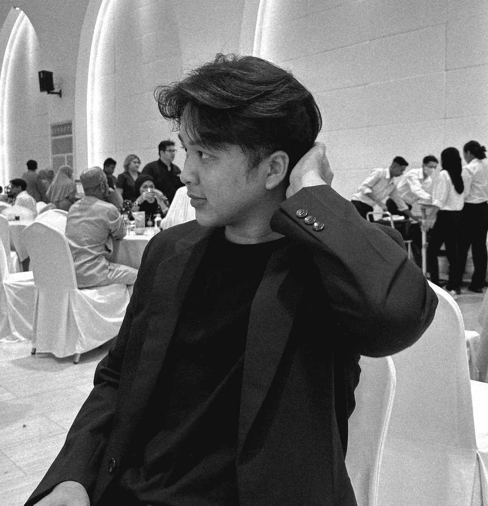

01
Design Strategy
Scalable Design Systems (Tokens/Variables), Information Architecture, Service Blueprinting, Product Roadmap Alignment.
Approach
I design systems that people can actually trust. Strategy, interface, design systems, research, handover: five disciplines, one point of view. What we build together ends up in someone's working day — let's make that day better.
Cases
About me

UX/UI & Product Designer with 3+ years specializing in enterprise IoT and government platforms.
My Computer Science background lets me collaborate with engineers in their own language.
Scalable Design Systems (Tokens/Variables), Information Architecture, Service Blueprinting, Product Roadmap Alignment.
Usability Testing, User Persona Mapping, User Flows, Site Maps, A/B Testing.
React, Ant Design, shadcn/ui, Tailwind CSS, Apache ECharts, Design-to-Code Handover.
Claude, Gemini, ChatGPT, Google Stitch — for research synthesis, prompt engineering, and rapid prototyping.
Figma (Advanced), FigJam, Adobe XD.
How I work
A structured yet flexible process that keeps users at the center of every decision.
Understand the business goals, users, and constraints through research and stakeholder interviews.
Synthesize findings into clear problem statements, user flows, and information architecture.
Explore wireframes and visual concepts, then refine into high-fidelity, testable prototypes.
Test with real users, iterate, and hand off polished, developer-ready designs.
Feedback after launch often sends me back to Discover — the process rarely runs in a straight line.
Toolbox
Career
A timeline of roles where I've shipped real products, systems, and design processes.
Swift Dynamics Co., Ltd.
Yes Web Design Studio Co., Ltd.
Online Asset Co., Ltd.
Get in touch
Need a UX/UI or product designer for your next project
or just want to say hi? Email me directly below, I read and reply to every message myself.
Phahonyothin Rd, Anusawari, Bang Khen, Bangkok 10220 LinkedIn ↗